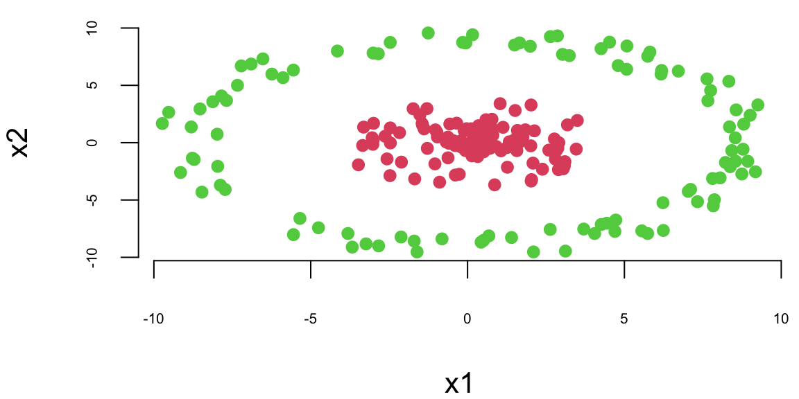
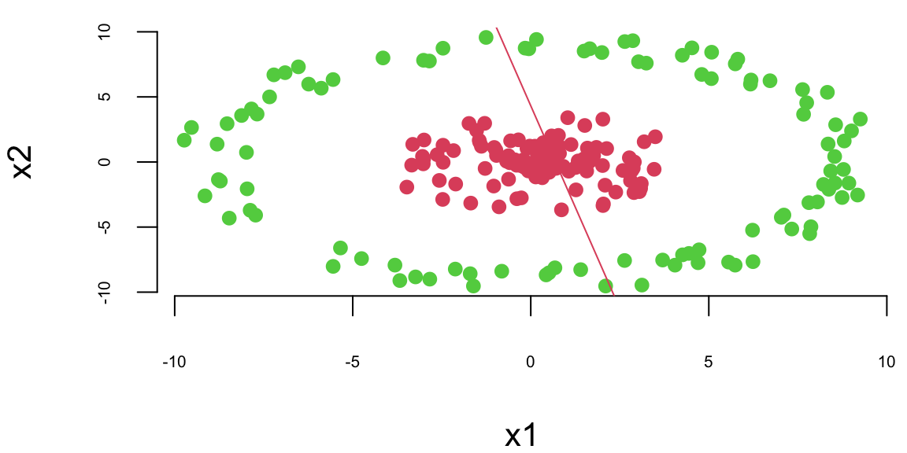
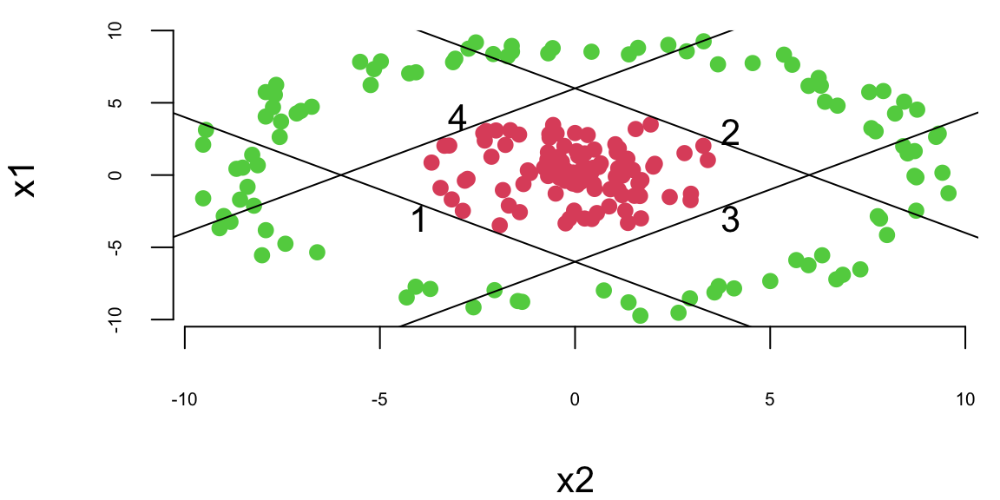
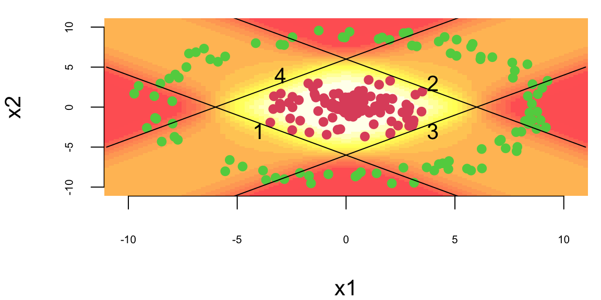
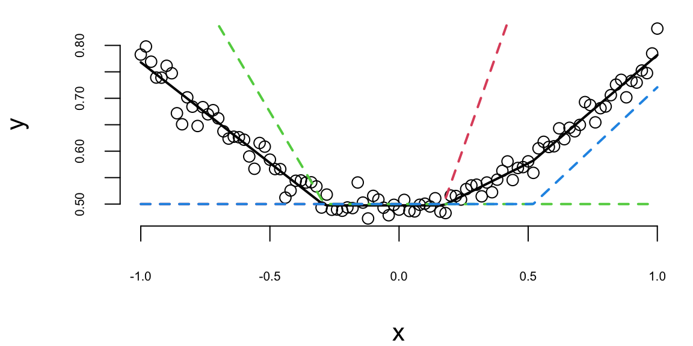
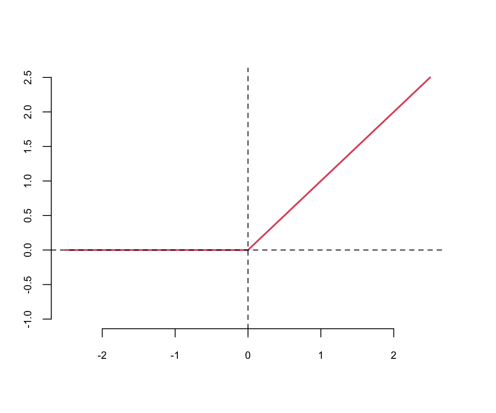

flowchart LR
subgraph Input["Input Layer"]
X1["$X_1$"]
X2["$X_2$"]
X3["$X_3$"]
end
subgraph H1["Hidden Layer 1"]
Z11["$Z_1^{(1)}$"]
Z12["$Z_2^{(1)}$"]
Z13["$Z_3^{(1)}$"]
Z14["$Z_4^{(1)}$"]
end
subgraph H2["Hidden Layer 2"]
Z21["$Z_1^{(2)}$"]
Z22["$Z_2^{(2)}$"]
end
subgraph Output["Output Layer"]
Y["$\hat{Y}$"]
end
X1 --> Z11 & Z12 & Z13 & Z14
X2 --> Z11 & Z12 & Z13 & Z14
X3 --> Z11 & Z12 & Z13 & Z14
Z11 --> Z21 & Z22
Z12 --> Z21 & Z22
Z13 --> Z21 & Z22
Z14 --> Z21 & Z22
Z21 --> Y
Z22 --> Y
19 Neural Networks
“We have a chance to build machines that will be smarter than us. We need to be thoughtful about what we are asking for.” — Geoffrey Hinton
In 2012, a neural network called AlexNet stunned the computer vision community by winning the ImageNet competition with an error rate nearly half that of the previous year’s winner. This breakthrough marked the beginning of deep learning’s modern era—a period in which neural networks have transformed fields from medical diagnosis to language translation, from game playing to autonomous driving.
The goal of this chapter is to provide a comprehensive overview of deep learning (DL) methods. From a statistical perspective, deep learning extends the framework of generalized linear models by introducing multiple layers of nonlinear transformations. While traditional statistical models are well-studied and interpretable, they often lack the flexibility to capture complex input-output relationships. Black-box predictive methods, such as decision trees and neural networks, offer greater flexibility at the cost of interpretability. Deep learning excels precisely where high-dimensional problems make traditional model selection challenging.
Deep learning thus offers a powerful alternative in domains traditionally served by statistical methods, opening rich avenues for future research—including uncertainty quantification, principled architecture selection, and Bayesian deep learning. Although DL models have been most prominently applied to image analysis and natural language processing, they have also demonstrated superior performance in traditional engineering and scientific domains such as spatio-temporal modeling and financial forecasting (N. Polson, Sokolov, and Xu 2021; Nicholas G. Polson, Sokolov, et al. 2017; Dixon, Polson, and Sokolov 2019; Sokolov 2017; Bhadra et al. 2021; Behnia, Karbowski, and Sokolov 2021; Nareklishvili, Polson, and Sokolov 2022, 2023b, 2023a; Nicholas G. Polson and Sokolov 2023; N. Polson and Sokolov 2020).
In this chapter, we focus on feed-forward neural networks and their applications to regression and classification. We begin with the mathematical foundations, work through illustrative examples, and discuss practical implementation in R and Python.
19.1 Introduction
Machine learning and statistical analysis share common foundations, but they emphasize different priorities: ML focuses on scalable algorithms and predictive accuracy, while statistics prioritizes interpretability and inferential rigor. Deep learning sits at the intersection, providing powerful pattern-matching capabilities suitable for AI applications such as image recognition and text analysis.
From a computational perspective, images and text can be represented as high-dimensional matrices and vectors, respectively. The challenge of recognizing objects in images or understanding natural language requires learning complex decision boundaries in these high-dimensional input spaces. Deep learning addresses this challenge by using hierarchical layers of transformations that progressively extract meaningful features from raw data. This approach differs from traditional statistical models in that the features are learned from data rather than specified a priori
There are several deep learning architectures - each has its own uses and purposes. Convolutional Neural Networks (CNN) deal with 2-dimensional input objects, i.e., images, and have been shown to outperform other techniques. Recurrent Neural Networks (RNN) have shown the best performance on speech and text analysis tasks.
In general, a neural network can be described as follows. Let \(f_1 , \ldots , f_L\) be given univariate activation functions for each of the \(L\) layers. Activation functions are nonlinear transformations of weighted data. A semi-affine activation rule is then defined by \[ f_l^{W,b} = f_l \left ( \sum_{j=1}^{N_l} W_{lj} X_j + b_l \right ) = f_l ( W_l X_l + b_l )\, \] which implicitly needs the specification of the number of hidden units \(N_l\). Our deep predictor, given the number of layers \(L\), then becomes the composite map
\[ \hat{Y}(X) = F(X) = \left ( f_l^{W_1,b_1} \circ \ldots \circ f_L^{W_L,b_L} \right ) ( X)\,. \]
Deep learning’s capacity to serve as a universal function approximator has deep mathematical roots—a principle traceable to the functional analysis of the nineteenth century. From a practical perspective, given a large enough dataset, we can empirically learn an optimal predictor. Similar to a classic basis decomposition, the deep approach uses univariate activation functions to decompose a high-dimensional input \(X\).
Let \(Z^{(l)}\) denote the \(l\)th layer, and so \(X = Z^{(0)}\). The final output \(Y\) can be numeric or categorical. The explicit structure of a deep prediction rule is then \[ \begin{aligned} \hat{Y} (X) & = W^{(L)} Z^{(L)} + b^{(L)} \\ Z^{(1)} & = f^{(1)} \left ( W^{(0)} X + b^{(0)} \right ) \\ Z^{(2)} & = f^{(2)} \left ( W^{(1)} Z^{(1)} + b^{(1)} \right ) \\ \ldots & \\ Z^{(L)} & = f^{(L)} \left ( W^{(L-1)} Z^{(L-1)} + b^{(L-1)} \right )\,. \end{aligned} \] Here \(W^{(l)}\) is a weight matrix and \(b^{(l)}\) are bias terms that shift the activation functions. Designing a good predictor depends crucially on the choice of univariate activation functions \(f^{(l)}\). The \(Z^{(l)}\) are hidden features (or latent representations) that the algorithm extracts from the data.
Put differently, the deep approach employs hierarchical predictors comprising a series of \(L\) nonlinear transformations applied to \(X\). Each of the \(L\) transformations is referred to as a layer, where the original input is \(X\), the output of the first transformation is the first layer, and so on, with the output \(\hat Y\) as the final layer. The layers \(1\) to \(L\) are called hidden layers. The number of layers \(L\) represents the depth of our network.
The following diagram illustrates the structure of a simple feedforward neural network with two hidden layers:
Each arrow represents a weight connecting neurons in adjacent layers. The input is transformed through successive layers of weighted combinations and nonlinear activations until it reaches the output.
19.2 Mathematical Foundations
Before exploring practical examples, it is instructive to see how neural networks can represent common mathematical operations. Interaction terms such as \(x_1 x_2\) and \((x_1 x_2)^2\), as well as max functions like \(\max(x_1, x_2)\), can be expressed as nonlinear functions of semi-affine combinations. Specifically:
\[ x_1x_2 = \frac{1}{4} ( x_1+x_2 )^2 - \frac{1}{4} (x_1-x_2)^2 \]
\[ \max(x_1,x_2) = \frac{1}{2} | x_1+x_2 | + \frac{1}{2} | x_1-x_2 | \]
\[ (x_1x_2)^2 = \frac{1}{4} ( x_1+x_2 )^4 + \frac{7}{4 \cdot 3^3} (x_1-x_2)^4 - \frac{1}{2 \cdot 3^3} ( x_1+ 2 x_2)^4 - \frac{2^3}{3^3} ( x_1 + \frac{1}{2} x_2 )^4 \]
These identities reveal that products and maxima—operations central to modeling interactions and thresholds—can be constructed from combinations of univariate functions applied to linear projections of the input. This is precisely what neural networks do.
Diaconis and Shahshahani (1981) provides further discussion in the context of Projection Pursuit Regression, where the model uses a layered structure \(\sum_{i=1}^N f(w_i^\top X)\). Their work on composite iterated functions foreshadowed the modern use of multiple layers to model complex multivariate systems.
ReLU Networks as Max-Sum Networks
Deep ReLU architectures can be viewed as max-sum networks via a simple identity. Define \(x^+ = \max(x,0)\). Let \(f_x(b) = (x + b)^+\) where \(b\) is an offset. Then \((x + y^+)^+ = \max(0, x, x+y)\). This is generalized in Feller (1971) (p.272), who shows by induction that
\[ ( f_{x_1} \circ \ldots \circ f_{x_k} ) (0) = ( x_1 + ( x_2 + \ldots + ( x_{k-1} + x_k^+ )^+ )^+ = \max_{1 \leq j \leq k} ( x_1 + \ldots + x_j )^+ \]
A composition of max-layers thus reduces to a single-layer max-sum network. This mathematical insight helps explain why deep ReLU networks are so effective: they can efficiently represent a rich class of piecewise linear functions.
Auto-Encoders
Auto-encoding is an important dimensionality reduction technique. An auto-encoder is a neural network architecture designed to replicate its input \(X\), i.e., \(Y = X\), via a bottleneck structure. The model \(F^{W,b}(X)\) learns to compress the information required to recreate \(X\) into a lower-dimensional representation. Heaton, Polson, and Witte (2016) provide an application to smart indexing in finance.
Suppose that we have \(N\) input vectors \(X = \{ x_1 , \ldots , x_N \} \in \mathbb{R}^{M\times N}\) and \(N\) output (or target) vectors \(\{ x_1 , \ldots , x_N \} \in \mathbb{R}^{M\times N}\). Setting biases to zero, for the purpose of illustration, and using only one hidden layer (\(L=2\)) with \(K < N\) factors, gives for \(j=1, \ldots, N\):
\[ Y_j(x) = F^m_{W} ( X )_j = \sum_{k=1}^K W^{jk}_2 f \left ( \sum_{i=1}^N W^{ki}_1 x_i \right ) = \sum_{k=1}^K W^{jk}_2 Z_j \quad \text{for } Z_j = f \left ( \sum_{i=1}^N W^{ki}_1 x_i \right ) \]
Since, in an auto-encoder, we fit the model \(X = F_{W}( X)\), and train the weights \(W = (W_1, W_2)\) with regularization penalty in a
\[ \mathcal{L} ( W ) = \operatorname{argmin}_W \Vert X - F_W (X) \Vert^2 + \lambda \phi(W) \]
with
\[ \phi(W) = \sum_{i,j,k} | W^{jk}_1 |^2 + | W^{ki}_2 |^2. \]
Writing the DL objective as an augmented Lagrangian (as in ADMM) with a hidden factor \(Z\), leads to a two step algorithm: an encoding step (a penalty for \(Z\)), and a decoding step for reconstructing the output signal via
\[ \operatorname{argmin}_{W,Z} \Vert X - W_2 Z \Vert^2 + \lambda \phi(Z) + \Vert Z - f( W_1, X ) \Vert^2, \]
where the regularization on \(W_1\) induces a penalty on \(Z\). The last term is the encoder, the first two the decoder.
If \(W_2\) is estimated from the structure of the training data matrix, then we have a traditional factor model, and the \(W_1\) matrix provides the factor loadings. PCA, PLS, SIR fall into this category (see Cook 2007 for further discussion). If \(W_2\) is trained based on the pair \(\hat{X}=\{Y,X\}\) then we have a sliced inverse regression model. If \(W_1\) and \(W_2\) are simultaneously estimated based on the training data \(X\), then we have a two layer deep learning model.
Auto-encoding demonstrates that deep learning does not directly model variance-covariance matrix explicitly as the architecture is already in predictive form. Given a hierarchical non-linear combination of deep learners, an implicit variance-covariance matrix exists, but that is not the driver of the algorithm.
Another interesting area for future research are long short term memory models (LSTMs). For example, a dynamic one layer auto-encoder for a financial time series \((Y_t)\) is a coupled system of the form
\[ Y_t = W_x X _t + W_y Y_{t-1} \quad \text{and} \quad \begin{pmatrix} X_t \\ Y_{t-1} \end{pmatrix} = W Y_t \]
Here, the state equation encodes and the matrix \(W\) decodes the \(Y_t\) vector into its history \(Y_{t-1}\) and the current state \(X_t\).
19.3 Classification with Neural Networks
To illustrate the concepts introduced above, we apply a feed-forward neural network with one hidden layer to a binary classification problem. Consider the simulated dataset shown below, where points are generated from two distributions: the inner cluster (green) represents one class, while the outer ring (red) represents the other. The goal is to learn a decision boundary that separates these two classes.

As a baseline, we first attempt to classify the data using logistic regression:
# Fit a logistic regression model
fit = glm(label~x1+x2, data=as.data.frame(d), family=binomial(link='logit'))
# Plot the training dataset
plot(d[,2],d[,3], col=d[,1]+2, pch=16, xlab="x1", ylab="x2")
th = fit$coefficients
# Plot the decision boundary
abline(-th[1]/th[3], -th[2]/th[3], col=2)
We can see that a logistic regression could not do it. It uses a single line to separate observations of two classes. We can see that the data is not linearly separable. However, we can use multiple lines to separate the data.
plot(x1~x2, data=d,col=d[,1]+2, pch=16)
# Plot lines that separate once class (red) from another (green)
lines(x1, -x1 - 6); text(-4,-3,1)
lines(x1, -x1 + 6); text(4,3,2)
lines(x1, x1 - 6); text(4,-3,3)
lines(x1, x1 + 6); text(-3,4,4)
Now, we do the same thing as in simple logistic regression and apply logistic function to each of those lines
# Define sigmoid function
sigmoid = function(z) exp(z)/(1+exp(z))
# Define hidden layer of our neural network
features = function(x1,x2) {
z1 = 6 + x1 + x2; a1 = sigmoid(z1)
z2 = 6 - x1 - x2; a2 = sigmoid(z2)
z3 = 6 - x1 + x2; a3 = sigmoid(z3)
z4 = 6 + x1 - x2; a4 = sigmoid(z4)
return(c(a1,a2,a3,a4))
}Using the matrix notation, we have \[ z = \sigma(Wx + b), ~ W = \begin{bmatrix} 1 & 1 \\ -1 & -1 \\ -1 & 1 \\ 1 & -1 \end{bmatrix}, ~ b = \begin{bmatrix} 6 \\ 6 \\ 6 \\ 6 \end{bmatrix}, ~ \sigma(z) = \frac{1}{1+e^{-z}} \]
The model shown above is the first layer of our neural network. It takes a two-dimensional input \(x\) and produces a four-dimensional output \(z\) which is called a feature vector. The feature vector is then passed to the output layer, which applies simple logistic regression to the feature vector. \[ \hat{y} = \sigma(w^Tz + b), ~ w = \begin{bmatrix} 1 \\ 1 \\ 1 \\ 1 \end{bmatrix}, ~ b = -3.1, ~ \sigma(z) = \frac{1}{1+e^{-z}} \]
The output of the output layer is the probability of the positive class.
# Calculate prediction (classification) using our neural network
predict_prob = function(x){
x1 = x[1]; x2 = x[2]
z = features(x1,x2)
# print(z)
mu = sum(z) - 3.1
# print(mu)
sigmoid(mu)
}We can use our model to do the predictions now
# Predict the probability of the positive class for a given point
predict_prob(c(0,0))## [1] 0.71predict_prob(c(0,10))## [1] 0.26The model generates sensible predictions, let’s plot the decision boundary to see how well it separates the data.
x1 = seq(-11,11,length.out = 100)
x2 = seq(-11,11,length.out = 100)
gr = as.matrix(expand.grid(x1,x2));## [1] 10000 2yhat = apply(gr,1,predict_prob)## [1] 10000image(x1,x2,matrix(yhat,ncol = 100), col = heat.colors(20,0.7))
How about a regression model? We will use a one-layer neural network to fit a quadratic function. We simulate noisy data from the following model \[
y = 0.5 + 0.3x^2 + \epsilon, ~ \epsilon \sim N(0,0.02^2)
\] And use 3 hidden units in the first hidden layer and two units in the second hidden layer. The output layer is a single unit. We will use the hyperbolic tangent (tanh) activation function for all layers. The model is defined as follows
relu = function(x) max(0,x)
nn = function(W,f=relu) {
b0 = W[1]; w0=W[2:4];b1 = W[5]; w1 = W[6:8]
z0 = apply(b0 + outer(x,w0,'*'),1:2,f)
yhat = b1 + z0 %*% w1
return(list(yhat = yhat[,1],z0=z0))
}The hidden layer has three outputs (neurons) and uses the ReLU activation function. The output linear layer has a single output. Thus, the prediction yhat is generated as a linear model of the feature vector z0. The model has 8 parameters. Let’s generate training data and fit the model. We will use the BFGS optimization algorithm to minimize the loss function (negative log-likelihood) of the model.
set.seed(99) #gretzky
nl = c(3,2)
params = c(0,rnorm(3),0,rnorm(3))
x = seq(-1,1,0.02)
y = 0.5 + 0.3*x^2 + rnorm(length(x),0,0.02)
loss = function(W) sum((nn(W)$yhat - y)^2)
res = optim(params, loss, method='BFGS')
res$par## [1] -0.24 1.39 -0.84 0.46 0.50 0.18 0.45 0.37Figure 19.1 shows the quadratic function and the neural network model. The solid black line is the neural network model, and the dashed lines are the basis functions. The model fits the data well.
o = nn(res$par)
plot(x,y); lines(x,o$yhat, lwd=2)
lines(x,0.5+o$z0[,1],col=2, lwd=2, lty=2); lines(x,0.5+o$z0[,2],col=3, lwd=2, lty=2); lines(x,0.5+o$z0[,3],col=4, lwd=2, lty=2)

Let’s try the \(\tanh\) function
set.seed(8) #gretzky
params = c(0,rnorm(3),0,rnorm(3))
loss = function(W) mean((nn(W,f=tanh)$yhat - y)^2)
res = optim(params, loss, method='BFGS')
res$par## [1] -0.98 -0.23 0.83 -1.14 0.84 -0.65 0.59 0.53o = nn(res$par, f=tanh)
plot(x,y, ylim=c(0.4,0.95)); lines(x,o$yhat, lwd=2);
lines(x,0.5*o$z0[,1]+0.9, lwd=2, lty=2, col=2); lines(x,0.5*o$z0[,2]+0.9, lwd=2, lty=2, col=3); lines(x,0.5*o$z0[,3]+0.9, lwd=2, lty=2, col=4)
Notice that we did not need to explicitly specify a quadratic term; the neural network discovered this structure from the data. The model automatically learned an appropriate basis function representation.
The same approach extends naturally to interaction terms. Consider the following data-generating process: \[ y = 0.5 + 0.1x_1 + 0.2x_2 + 0.5x_1x_2+ \epsilon, ~ \epsilon \sim N(0,0.02^2) \] We can use the same model as above, but with two input variables. The model will learn the interaction term from the data.
set.seed(99) #ovi
x1 = seq(-1,1,0.01)
x2 = x1
y = 0.5 + 0.1*x1 + 0.2*x2 + 0.5*x1*x2 + rnorm(length(x1),0,0.02)
library("scatterplot3d")
s3d = scatterplot3d(x1,x2,y, pch=16)
x = cbind(x1,x2)
nn = function(W,f=relu) {
b0 = W[1]; w0 = W[2:5]; b1 = W[6]; w1 = W[7:8]
w0 = matrix(w0,nrow=2)
z0 = apply(b0 + x%*%w0,1:2,f)
yhat = b1 + z0 %*% w1
return(list(yhat = yhat[,1],z0=z0))
}
W = c(0,rnorm(4),0,rnorm(2))
loss = function(W) sum((nn(W, f=tanh)$yhat - y)^2)
res = optim(W, fn=loss, method='BFGS')
res$par## [1] 0.78 0.50 -1.39 0.63 -0.94 -2.08 -2.90 6.85o = nn(res$par, f=tanh)
s3d$points3d(x1,x2,o$yhat, col=2, type='l', lwd=5)
s3d$points3d(x1,x2,o$z0[,1], col=3, type='l', lwd=5)
s3d$points3d(x1,x2,o$z0[,2], col=4, type='l', lwd=5)
Effectively, neural networks serve as flexible function approximators, analogous to nonparametric regression methods but with the crucial advantage of learning the basis functions directly from data.
19.4 Activation Functions
The last output layer of a neural network has sigmoid activation function for binary output variable (classification) and no activation function for continuous output variable regression. The hidden layers can have different activation functions. The most common activation functions are the hyperbolic tangent function and the rectified linear unit (ReLU) function.
A typical approach is to use the same activation function for all hidden layers. The hyperbolic tangent function is defined as \[ \tanh(z) = \frac{e^z - e^{-z}}{e^z + e^{-z}} \] Notice that the hyperbolic tangent function is a scaled version of the sigmoid function, with \(\tanh(0) = 0\). It is a smooth function which is differentiable everywhere.





Typically \(\tanh\) is preferred to the sigmoid function because it is zero-centered. The major drawback of sigmoid and \(\tanh\) functions is that they saturate when the input is very large or very small. When we try to learn the weights of the network, the optimization algorithms make small steps in the space of the parameters and when the weights are large the small changes won’t affect the values of the layers’ outputs and optimization will “stagnate.”
This means that the gradient of the function is very small, which makes learning slow. The ReLU function is defined as \[ \text{ReLU}(z) = \max(0,z) \] The ReLU function is a piecewise linear function which is computationally efficient and easy to optimize. The ReLU function is the most commonly used activation function in deep learning. The ReLU function is not differentiable at \(z=0\), but it is differentiable everywhere else. The derivative of the ReLU function is \[ \text{ReLU}'(z) = \begin{cases} 0 & \text{if } z < 0 \\ 1 & \text{if } z > 0 \end{cases} \]
19.5 Modern Deep Learning Architectures
The evolution of deep learning has led to increasingly sophisticated architectural patterns that go beyond simple stacked layers. Modern systems often combine multiple neural networks, reuse pre-trained components, and employ ensemble methods to achieve state-of-the-art performance. In this section, we explore three key architectural paradigms that have become central to contemporary deep learning practice: transfer learning with pre-trained blocks, mixture of experts models, and ensemble methods.
Transfer Learning and Pre-trained Blocks
One of the most significant developments in deep learning is the recognition that neural networks learn hierarchical representations, where early layers capture general features and deeper layers encode task-specific patterns. This observation has given rise to transfer learning, where models trained on large-scale datasets can be adapted to new tasks with limited data.
Consider the analogy of learning to drive different vehicles. Once you learn to drive a car, adapting to a truck requires learning the differences rather than starting from scratch. Similarly, a neural network trained to recognize objects in millions of images has learned fundamental visual features—edges, textures, shapes—that are useful for many computer vision tasks.
The typical transfer learning workflow involves taking a pre-trained model, removing its final layers, and replacing them with new layers appropriate for the target task. For example, a convolutional neural network (CNN) trained on ImageNet [we discuss CNNs in detail in Chapter 23] can be adapted for medical image classification by freezing the early convolutional layers and retraining only the final classification layers. The mathematical formulation is straightforward. Let \(F_{\text{pre}}(X; \theta_{\text{frozen}})\) represent the pre-trained feature extractor with frozen parameters, and \(G(Z; \theta_{\text{new}})\) the new task-specific layers. The complete model becomes:
\[ \hat{Y} = G(F_{\text{pre}}(X; \theta_{\text{frozen}}); \theta_{\text{new}}) \]
During training, we only optimize \(\theta_{\text{new}}\) while keeping \(\theta_{\text{frozen}}\) fixed. This approach has several advantages. First, it dramatically reduces the amount of labeled data required for the new task. Second, it decreases training time since we only update a subset of parameters. Third, it often leads to better generalization, especially when target task data is limited.
Modern frameworks make transfer learning remarkably accessible. In natural language processing, transformer-based models like BERT (Devlin et al. 2019) and GPT (Radford et al. 2018; Brown et al. 2020) are routinely fine-tuned for downstream tasks such as sentiment analysis, named entity recognition, and question answering. These models, pre-trained on billions of tokens, capture rich linguistic representations that transfer across diverse language tasks [we explore transformers and language models in Chapters 24 and 25].
The practice of using pre-trained blocks extends beyond simple transfer learning. Modern architectures often incorporate multiple pre-trained components as building blocks. For instance, a system for visual question answering might combine a pre-trained CNN for image encoding with a pre-trained transformer for language understanding, with only a small fusion network trained from scratch.
Mixture of Experts
As models grow in scale and complexity, a natural question arises: must every parameter be active for every input? The mixture of experts (MoE) architecture provides an elegant answer by using different sub-networks (experts) for different inputs, with a gating mechanism that decides which experts to activate.
The core idea traces back to work by Jacobs et al. (1991), but has seen renewed interest in modern large-scale systems. Think of a medical diagnosis system where different specialists (cardiologist, neurologist, oncologist) examine patients based on their symptoms. A triage system routes each patient to the appropriate specialist. Similarly, in an MoE model, a gating network routes inputs to specialized expert networks.
Formally, let \(f_1, \ldots, f_K\) denote \(K\) expert models (networks), each implementing a function \(f_k(X; \theta_k)\). A gating network \(g(X; \phi)\) produces a probability distribution over experts, for example: \[ g(X; \phi) = \text{softmax}(W_g X + b_g) \in \mathbb{R}^K \]
The final output is a weighted combination of expert predictions:
\[ \hat{Y}(X) = \sum_{k=1}^K g_k(X; \phi) \cdot f_k(X; \theta_k). \]
In practice, to improve computational efficiency, only the top-\(N\) experts with highest gating scores are activated for each input, setting others to zero. This sparse activation pattern allows MoE models to have enormous capacity while maintaining reasonable computational costs.
From a statistical perspective, Jiang and Tanner (1999a) provided important theoretical foundations for mixture of experts models. They demonstrated that hierarchical mixtures of experts (HME) can approximate arbitrary mean functions at a rate of \(O(m^{-2/s})\) in \(L_p\) norm, where \(m\) is the number of experts and \(s\) is the input dimensionality. This result establishes that MoE models are universal approximators with quantifiable convergence rates, connecting them to the broader statistical literature on nonparametric regression.
The work by Stroud, Müller, and Polson (2003) demonstrates an elegant application of mixture-of-experts principles within Bayesian inference for complex time series models. Their approach addresses the fundamental challenge of estimating hidden states in nonlinear state-space models where exact inference is mathematically intractable. The core innovation lies in using an auxiliary mixture model to approximate the intractable nonlinear components. This auxiliary model functions as a mixture of experts, where each expert is a simple linear regression model of the form \(p^{a}(y_{t}|x_{t},z_{t}=k) = \mathcal{N}(\alpha_{k}+\beta_{k}x_{t},\tau_{k}^{2})\). These linear experts provide local approximations of the true nonlinear function around specific “knots” in the state space. The gating mechanism employs state-dependent weights \(\pi_{k}(x_{t})\) determined by Gaussian kernels centered at different locations. The current hidden state value \(x_t\) serves as input to this gating network, which determines the relevance of each linear expert for that particular region of the state space.
A critical theoretical challenge with MoE models is identifiability: can the model parameters be uniquely determined from the data? Jiang and Tanner (1999b) showed that without constraints, MoE models suffer from inherent non-identifiability due to invariant transformations. For example, permuting expert labels or translating gating parameters can yield identical predictions. They established that by imposing order restrictions on expert parameters (such as requiring experts to be ordered by their intercepts) and proper initialization of gating parameters, MoE systems become identifiable. This work provides the statistical rigor necessary for reliable inference and interpretation of mixture of experts models, complementing the computational advances in modern implementations.
Recent work has demonstrated the power of this approach at scale. Fedus, Zoph, and Shazeer (2022) trained a mixture of experts language model with 1.6 trillion parameters, where only a small fraction are active for any given input. The model achieves strong performance while requiring less computation per token than dense models of comparable quality. Similarly, Riquelme et al. (2021) showed that vision transformers with mixture of experts layers can achieve better accuracy-computation trade-offs than their dense counterparts.
The gating mechanism introduces an interesting learning problem: the network must simultaneously learn to specialize experts and to route inputs appropriately. Various training strategies have been proposed, including auxiliary losses that encourage load balancing across experts and techniques to promote expert specialization (Shazeer et al. 2017).
Ensembles
While mixture of experts learns a single integrated model with internal routing, ensemble methods combine predictions from multiple independently trained models. The rationale is straightforward: different models trained on the same data often make different errors, and averaging their predictions can reduce variance and improve overall performance.
Ensemble methods have a long history in statistics and machine learning. The classical result from Dietterich (2000) shows that an ensemble is effective when individual models are accurate and diverse. Consider \(M\) models \(f_1, \ldots, f_M\). For regression, a simple ensemble averages predictions:
\[ \hat{Y}_{\text{ensemble}}(X) = \frac{1}{M} \sum_{m=1}^M f_m(X) \]
For classification, we can use majority voting or average the predicted probabilities. The bias-variance decomposition provides insight into why ensembles work. The expected squared error of a single model can be written as:
\[ \E{(Y - f(X))^2} = \text{Bias}^2 + \text{Variance} + \text{Noise} \]
If we average \(M\) models with the same bias but independent errors, the variance term reduces by a factor of \(M\), assuming the models are uncorrelated. In practice, models are not perfectly independent, but ensembles still typically achieve substantial variance reduction.
In deep learning, several ensemble strategies are commonly employed:
Model averaging: Train multiple neural networks with different random initializations or architectures, then average their predictions at test time.
Snapshot ensembles (Huang et al. 2017): Save model checkpoints at various points during training (particularly at local minima) and ensemble them.
Multi-architecture ensembles: Combine models with different architectures (e.g., CNNs, transformers, and recurrent networks) to capture complementary patterns.
A particularly effective technique is dropout as ensemble (Srivastava et al. 2014). During training, dropout randomly deactivates neurons with probability \(p\). At test time, all neurons are active but their outputs are scaled by \((1-p)\). Gal and Ghahramani (2016) showed that this can be interpreted as approximate Bayesian inference, where dropout at test time (called Monte Carlo dropout) produces an ensemble of sub-networks, providing both predictions and uncertainty estimates.
The computational cost of ensembles is their main drawback—inference requires running multiple models. However, the reliability gains are often worth the expense, particularly in high-stakes applications like medical diagnosis, autonomous driving, and financial forecasting. Modern competitions and benchmarks frequently use ensembles: winning solutions in Kaggle competitions typically combine dozens of models (Chen and Guestrin 2016).
Architectural Innovations
These three paradigms—pre-trained blocks, mixture of experts, and ensembles—represent different philosophies for building capable systems. Transfer learning emphasizes knowledge reuse, recognizing that representations learned on large datasets are broadly useful. Mixture of experts emphasizes conditional computation, activating only relevant capacity for each input. Ensembles emphasize diversity and robustness, combining multiple perspectives to improve reliability.
Modern systems often combine these approaches. For instance, a production system might ensemble multiple models, each of which uses pre-trained components and employs mixture of experts layers for efficiency. The field continues to develop new architectural patterns, but these fundamental ideas—reusing learned knowledge, routing computation dynamically, and aggregating diverse predictions—are likely to remain central to deep learning practice.
19.6 Summary
In this chapter, we introduced the mathematical foundations of neural networks and deep learning. We began by establishing that neural networks are hierarchical compositions of nonlinear transformations—a framework that extends generalized linear models while providing the flexibility to learn complex patterns from data. Key concepts covered include:
Feedforward architecture: A neural network applies successive layers of weighted linear combinations followed by nonlinear activation functions, extracting increasingly abstract features at each layer.
Activation functions: Functions like ReLU, \(\tanh\), and sigmoid introduce nonlinearity, enabling networks to approximate arbitrary functions. ReLU has become the default choice for hidden layers due to its computational efficiency and favorable gradient properties.
Auto-encoders: These networks learn compressed representations by training to reconstruct their inputs through a bottleneck layer, providing a powerful approach to unsupervised dimensionality reduction.
Transfer learning and pre-trained blocks: Knowledge learned on large datasets can be transferred to new tasks, dramatically reducing data and computation requirements.
Mixture of experts: Conditional computation allows models to activate only relevant sub-networks for each input, enabling massive scale with manageable computational costs.
Ensemble methods: Combining diverse models improves robustness and reduces variance, with techniques ranging from simple averaging to dropout-based approximations.
The implementations presented in this chapter—from simple classification problems to regression with learned basis functions—demonstrate that neural networks can be understood through the lens of traditional statistical methods while offering capabilities that extend far beyond them.
Looking ahead, Chapter 23 covers convolutional neural networks (CNNs), which exploit spatial structure in images through weight sharing and local connectivity. Chapters 24 and 25 introduce transformers and large language models, architectures that have revolutionized natural language processing through attention mechanisms and massive scale. These architectures build directly on the principles established in this chapter: layered representations, learned features, and the power of deep hierarchical computation.